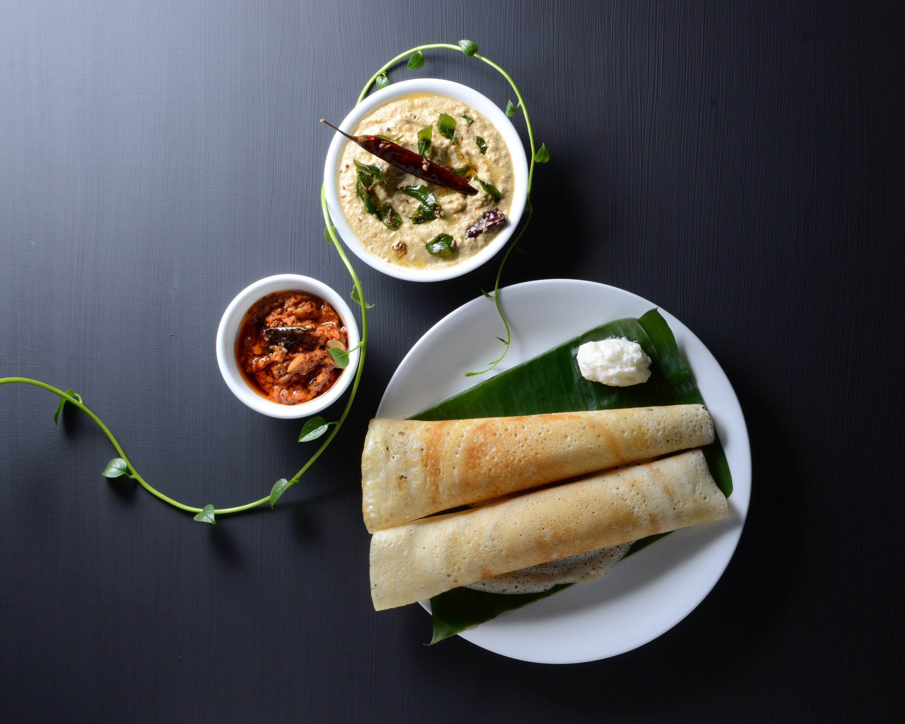

Dosa

Description
Dosa is a popular South Indian dish made from fermented rice and lentil batter.It is a thin, crepe-like pancake typically served with chutney and sambar.
Ingredients
- Rice
- Urad Dal(Black gram)
- Fenugreek seeds
- Salt
- water
- Oil
- Ghee
Steps
- Prepare the Ingredients:
- Measure and rinse the ingredients.
- Soak rice, urad dal, and fenugreek seeds separately.
- Grind the Batter:
- Drain soaked rice and urad dal.
- Grind rice and dal separately to a smooth paste.
- Mix both pastes, add salt, and mix well.
- Fermentation:
- Cover batter and let ferment for 8-12 hours.
- Preheat the Griddle or Skillet.
- Make the Dosas:
- Stir batter and adjust consistency.
- Pour batter onto hot griddle, spread thinly.
- Drizzle oil around edges, cook until golden brown.
- Flip dosa, cook for a minute, and remove from heat.
- Serve hot with chutney, sambar, or filling of choice.